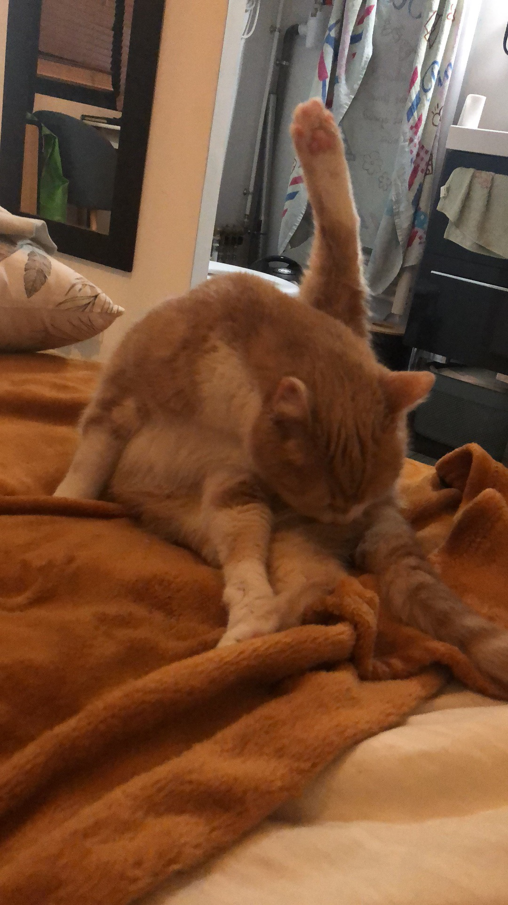
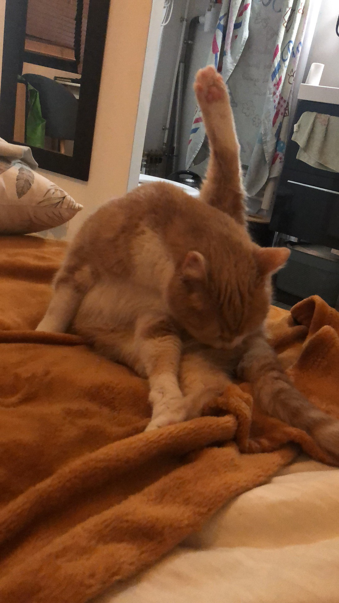
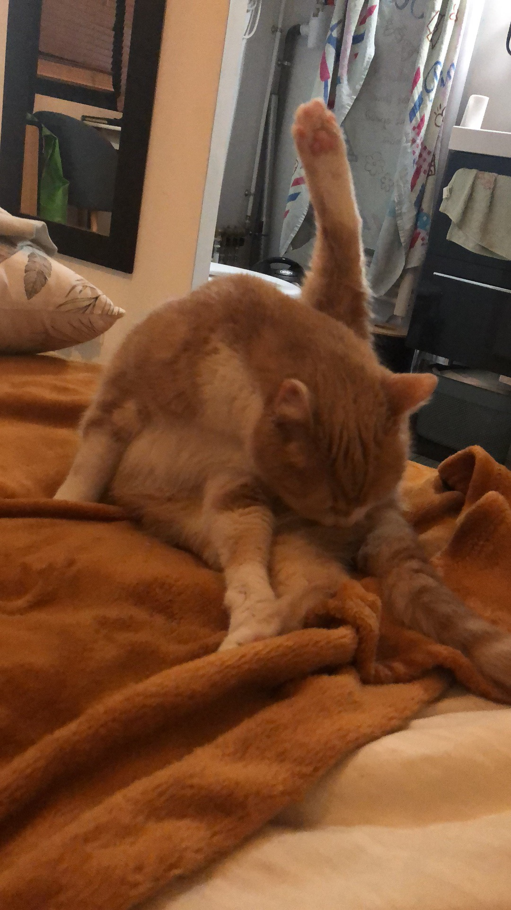

DIVERS
LETS ENJOY MY SWEET LITTLE CAT TOGETHER
.jpg "popcorn")
.jpg "popcorn2")
.jpg "popcorn4") 

.jpg "popcorn6")
48%
HTML/CSS
80%
Problem Solving
90%
Creativity
99%
Excel
1. identified a business travel partner adapted to the company
2. Analyzed the rates and services of each potential partner
3. Negotiated with the selected partner to obtain competitive rates and additional benefits for the company.
4. Managed the company's import contracts in relation to marine and petrochemical engineering, ensuring compliance with Chinese regulations and timely delivery of products to customers
Licence in Economic and Social Administration in French
Marketing project - create a startup
Led the development of a business plan for the startup Farm Up,offering organic vegetables via a mobile app.
Conducted target market research (customer segmentation, Blue Ocean strategy canvas, marketing mix analysis) to identify growth opportunities.
Developed a strategic plan including branding, pricing, and distribution strategies, presented in a comprehensive business plan.
Strategy project - giving advice to an existing company
Provided strategic advice for the start-up Karma, including a SWOT analysis and recommendations for long-term growth.
Assessed the competitive environment and industry trends to identify potential opportunities and threats for Karma.
